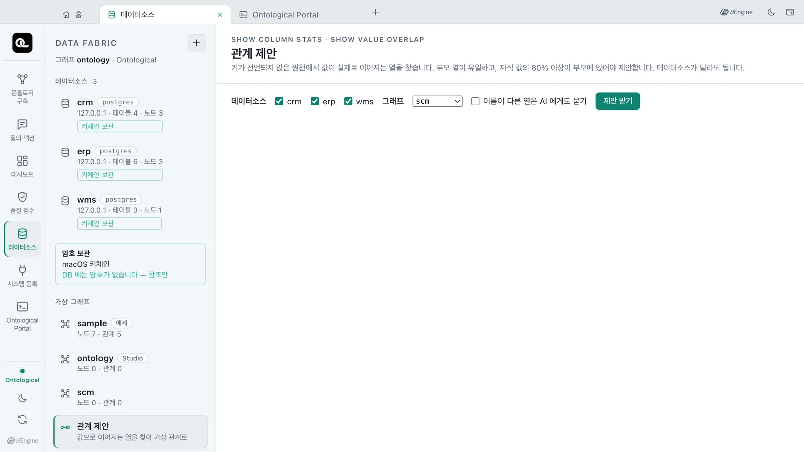
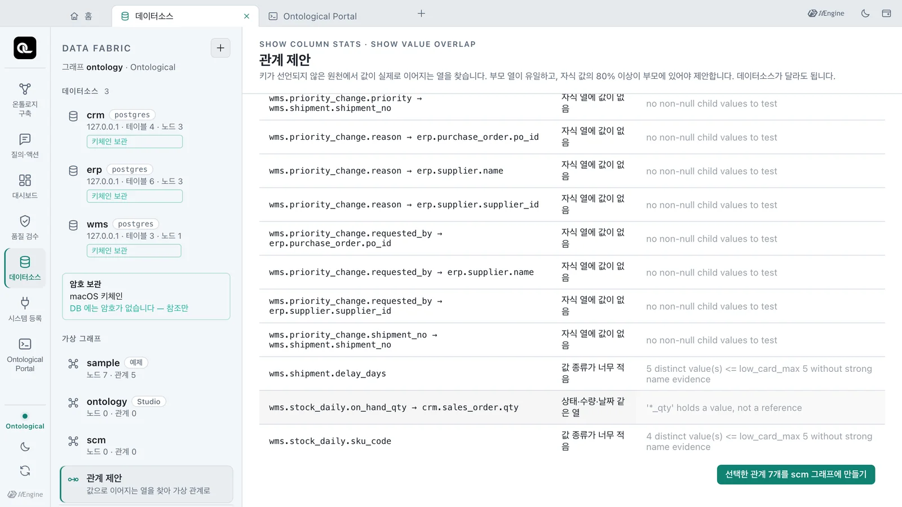
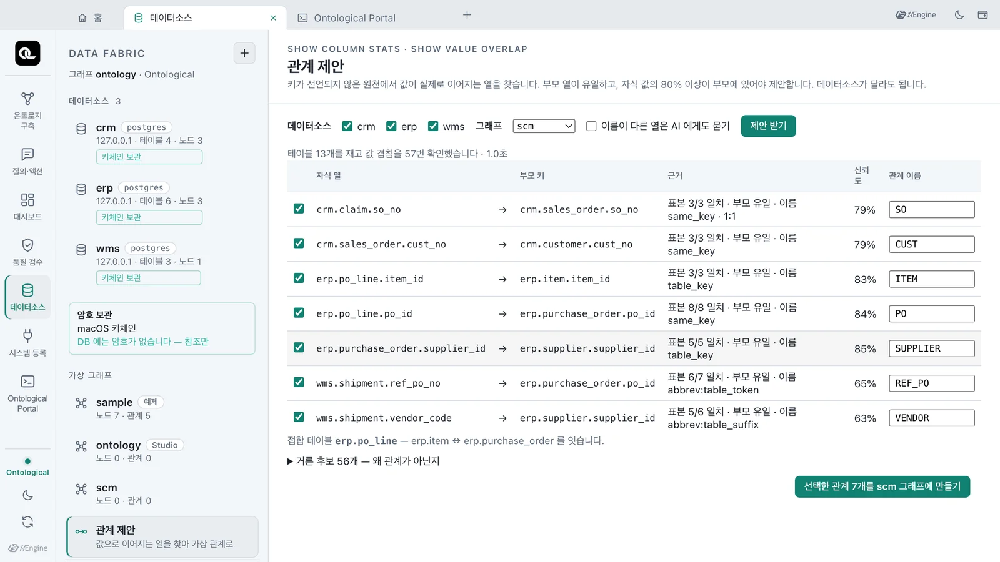
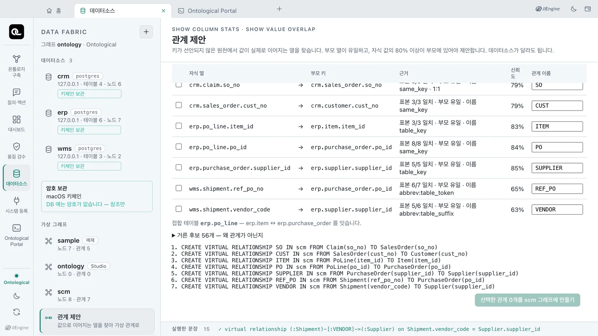
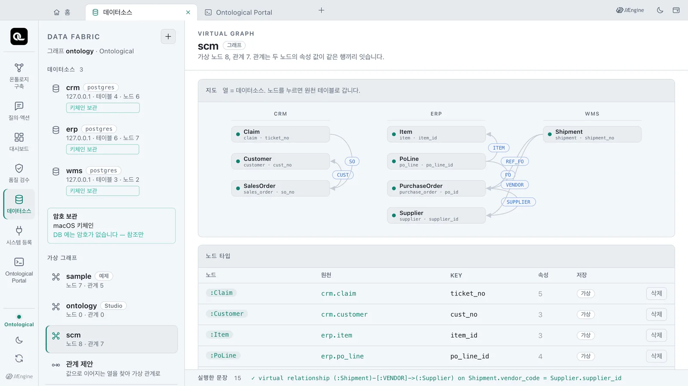
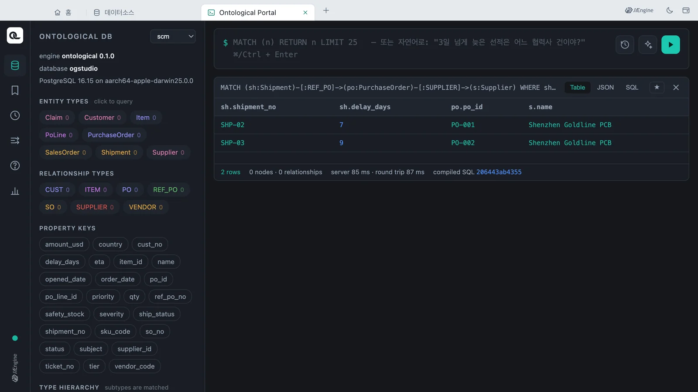

키(외래 키)가 선언되지 않은 원천에서 값이 실제로 이어지는 열을 찾아 가상 관계로 제안받습니다. 예제 업무 DB 세 곳에서 근거와 함께 관계 7개를 받고, 새 그래프에 만든 뒤 두 DB를 잇는 질의까지 해 봅니다.
왜 제안이 필요한가#
6장에서는 PoLine.po_id = PurchaseOrder.po_id처럼 어느 열이 어느 열을 가리키는지 사람이 알고 관계를 만들었습니다. 실제 회사의 원천에는 테이블이 수백 개 있습니다. 외래 키가 선언되지 않은 경우가 많고, 시스템마다 이름도 다릅니다. 같은 발주 번호가 ERP에서는 po_id, WMS에서는 ref_po_no입니다.
「관계 제안」은 이름이 아니라 값을 비교해 이어지는 열을 찾습니다. 그렇게 판단한 근거도 함께 보여 줍니다. 데이터소스가 달라도 찾습니다.
어떻게 찾나#
엔진은 측정만 하고, 어느 쌍이 관계인지는 Studio가 판단합니다. 두 문장 모두 원천에 쓰지 않고, 데이터를 복사하지 않습니다.
SHOW COLUMN STATS FROM erp.purchase_order
SHOW VALUE OVERLAP FROM wms.shipment(ref_po_no) IN erp.purchase_order(po_id)
SHOW COLUMN STATS— 앞 1000행에서 열마다 NULL 수, 고유 값 수, 값의 유일성, 가장 자주 나오는 값 다섯, 짧은 표본을 잽니다.SHOW VALUE OVERLAP— 자식 열의 고유 값 최대 200개 중 부모 열에 있는 값의 수와 비율, 부모 값의 유일성을 잽니다.
판단 규칙은 다음과 같습니다.
- 부모 열이 유일하고, 자식 값의 80% 이상이 부모에 있어야 제안합니다.
- 상태·플래그·수량·날짜 열은 자식이 되지 않습니다. 값이 겹치더라도 그런 열은 다른 행을 가리키는 참조가 아니기 때문입니다.
- 이름도 근거로 봅니다.
same_key(이름이 같음,po_id→po_id),table_key(테이블 이름 + 키,item_id→item.item_id), 약어 사전으로 읽은 규칙(abbrev:…,po= purchase_order,vendor= supplier) 등입니다. - 이름 근거 없이 값만 맞는 열은 신뢰도를 0.6 이하로 제한합니다.
참고로 NVIDIA Auto Ontology는 연결 하나 안에서만 조인을 찾습니다. 임베딩 키가 없으면 추론을 건너뛰며, 근거를 남기지 않습니다. 이 기능은 데이터소스가 달라도 제안하고, 제안마다 근거를 보여 줍니다.
따라 하기 — 빈 그래프 만들기#
예제 그래프 sample에는 이미 관계가 있습니다. 관계가 하나도 없는 새 그래프 scm에 제안을 받아 봅니다. 포털 탭(7장에서 자세히 다룹니다)에서 다음 문장을 실행합니다. 그래프 선택과 상관없이 실행됩니다.
CREATE GRAPH scm
따라 하기 — 제안 받기#
- 데이터소스 탭을 엽니다. 이미 열려 있었다면 탭을 닫고 다시 열어야 그래프 목록에
scm이 보입니다. - 왼쪽 아래 「관계 제안」을 누릅니다.
- 데이터소스
crm·erp·wms가 모두 체크돼 있는지 보고, 그래프는scm을 고릅니다. - 「이름이 다른 열은 AI 에게도 묻기」는 끈 채로 「제안 받기」를 누릅니다. 규칙만으로 판단합니다.

실제 측정에서는 1초 남짓(1.0~1.8초)이 걸렸습니다. 테이블 13개를 측정하고 값 겹침을 57번 확인해 관계 7개를 제안합니다.

| 관계 이름 | 자식 열 → 부모 키 | 표본 일치 | 이름 규칙 | 신뢰도 |
|---|---|---|---|---|
SO |
crm.claim.so_no→ crm.sales_order.so_no |
3/3 | same_key · 1:1 | 79% |
CUST |
crm.sales_order.cust_no→ crm.customer.cust_no |
3/3 | same_key | 79% |
ITEM |
erp.po_line.item_id→ erp.item.item_id |
3/3 | table_key | 83% |
PO |
erp.po_line.po_id→ erp.purchase_order.po_id |
8/8 | same_key | 84% |
SUPPLIER |
erp.purchase_order.supplier_id→ erp.supplier.supplier_id |
5/5 | table_key | 85% |
REF_PO |
wms.shipment.ref_po_no→ erp.purchase_order.po_id |
6/7 | abbrev:table_token | 65% |
VENDOR |
wms.shipment.vendor_code→ erp.supplier.supplier_id |
5/6 | abbrev:table_suffix | 63% |
일곱 개 모두 부모 키가 유일합니다(화면의 「부모 유일」). 마지막 두 개는 DB도 다르고 이름도 다른 참조입니다. WMS의 선적이 ERP의 발주와 협력사를 가리킵니다. 표 아래에서는 erp.po_line이 품목과 발주를 잇는 접합 테이블임을 알려 줍니다.
신뢰도는 이렇게 계산합니다
신뢰도 = (0.5 + 0.5 × 이름 점수) × 일치 비율 × 표본 보정, 표본 보정 = 0.8 + 0.2 × min(1, 표본 수 / 20). REF_PO는 약어 규칙의 이름 점수 0.75, 일치 비율 6/7 = 0.857, 표본 7개라 (0.875) × 0.857 × 0.87 ≈ 0.65입니다. 표본이 적을수록, 이름이 덜 닮을수록 낮아집니다.
거른 후보 읽기#
「거른 후보 56개 — 왜 관계가 아닌지」를 펼치면, 측정했지만 제안하지 않은 쌍과 그 이유가 나옵니다.

| 후보 | 이유 |
|---|---|
erp.po_line.qty → crm.sales_order.qty |
상태·수량·날짜 같은 열 — 수량은 값이지 참조가 아닙니다 |
erp.supplier.country → crm.customer.country |
값이 충분히 겹치지 않음 — 1/3 = 0.33 |
crm.sales_order.sku_code |
값 종류가 너무 적음 — 3가지뿐이고 이름 근거가 약합니다 |
wms.priority_change.reason → … 등 |
자식 열에 값이 없음 — 액션이 기록을 남기는 테이블이라 아직 비어 있습니다 |
crm.sales_order.sku_code는 예제 그래프에서 FOR_ITEM으로 품목과 이어져 있습니다. 하지만 값이 3가지뿐이라 규칙만으로는 확신하지 못했습니다. 이런 관계는 6장처럼 사람이 직접 만듭니다. 제안은 사람의 판단을 대신하지 않습니다. 근거를 붙여 후보를 좁혀 줍니다.
따라 하기 — 고른 관계 만들기#
- 체크되지 않은
REF_PO와VENDOR도 체크합니다. 근거를 읽고 맞다고 판단했다면 신뢰도가 70% 아래여도 됩니다. - 관계 이름을 바꾸고 싶으면 오른쪽 칸을 고칩니다. 여기서는 그대로 둡니다.
- 「선택한 관계 7개를 scm 그래프에 만들기」를 누릅니다.

양 끝 테이블을 읽는 가상 노드가 그래프에 없으면 먼저 만듭니다(부모는 부모 열을 키로). 이어서 관계를 만듭니다. 실행한 관계 문장이 아래에 차례로 남습니다.

CREATE VIRTUAL RELATIONSHIP REF_PO IN scm FROM Shipment(ref_po_no) TO PurchaseOrder(po_id)
CREATE VIRTUAL RELATIONSHIP VENDOR IN scm FROM Shipment(vendor_code) TO Supplier(supplier_id)
왼쪽 가상 그래프에서 scm을 누르면 가상 노드 8개와 관계 7개가 데이터소스별로 보입니다.

바로 써 보기#
포털에서 그래프 scm을 고르고, 제안받은 관계로 WMS의 선적에서 ERP의 발주와 협력사까지 따라갑니다.
MATCH (sh:Shipment)-[:REF_PO]->(po:PurchaseOrder)-[:SUPPLIER]->(s:Supplier)
WHERE sh.delay_days > 3
RETURN sh.shipment_no, sh.delay_days, po.po_id, s.name
| sh.shipment_no | sh.delay_days | po.po_id | s.name |
|---|---|---|---|
| SHP-02 | 7 | PO-001 | Shenzhen Goldline PCB |
| SHP-03 | 9 | PO-002 | Shenzhen Goldline PCB |

예제 그래프 sample에서 사람이 만든 관계(SHIPS·ORDERED_FROM)로 묻던 것과 같은 답입니다. 관계를 하나도 직접 쓰지 않고 같은 그래프를 얻었습니다.
확인 문제
erp.supplier.country → crm.customer.country는 왜 제안되지 않았나요?wms.shipment.ref_po_no → erp.purchase_order.po_id의 신뢰도가 65%로 다른 제안보다 낮은 이유는 무엇인가요?- 제안을 받는 동안 원천 DB에 쓰기가 일어나나요? 데이터가 복사되나요?
정답 보기
- 자식 값 중 부모에 있는 비율이 1/3 = 0.33으로, 기준 0.8에 못 미칩니다(「값이 충분히 겹치지 않음」). 나라 이름은 여러 테이블에 흔히 나오는 값이지 참조가 아닙니다.
- 이름이 같지 않고 약어 규칙(
po= purchase_order)으로만 맞아 이름 점수가 0.75입니다. 표본 7개 중 6개만 일치(0.857)했고, 표본이 적어 보정도 받았기 때문입니다. 70% 아래라 미리 체크되지 않습니다. 근거를 읽고 사람이 고릅니다. - 아니요.
SHOW COLUMN STATS와SHOW VALUE OVERLAP은 읽기만 하고, 앞 1000행과 고유 값 200개의 표본만 측정합니다. 만든 가상 관계도 조인 규칙일 뿐, 데이터를 복사하지 않습니다.